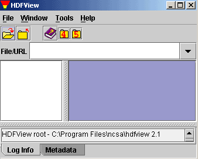

HDFView is a visual tool for browsing and editing HDF4 and HDF5 files.
Using HDFView, you can
- view a file hierarchy in a tree structure
- create new file, add or delete groups and datasets
- view and modify the content of a dataset
- add, delete and modify attributes
- replace I/O and GUI components such as table view, image view and metadata view
- About This Release
- - new features and major changes of the latest version
- the User's Guide
- - information on how to use the HDFView
- the Module Guide
- - instruction on how to implement HDFView modules
|

|